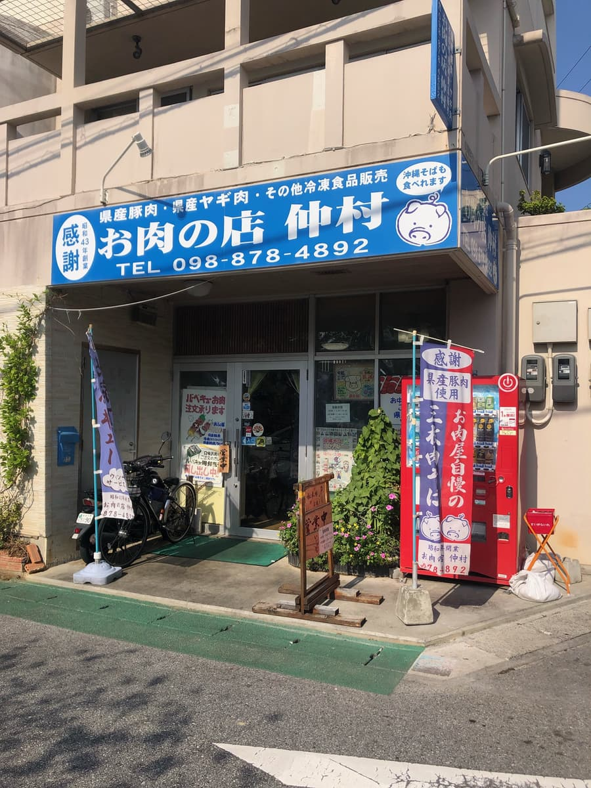
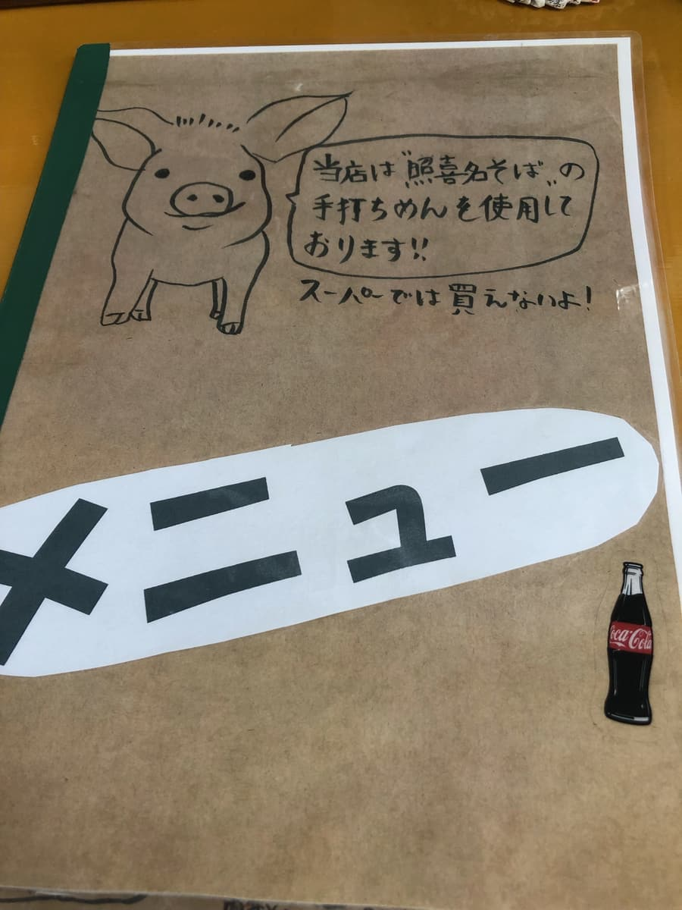
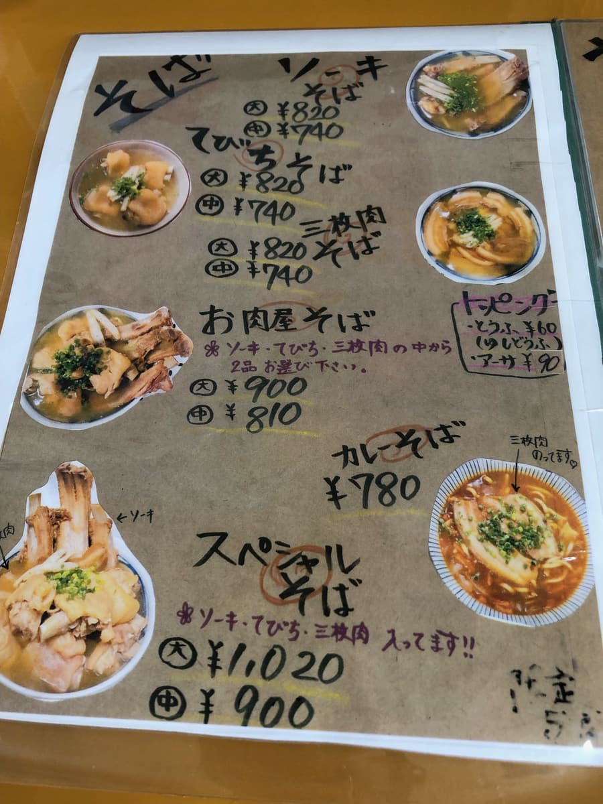
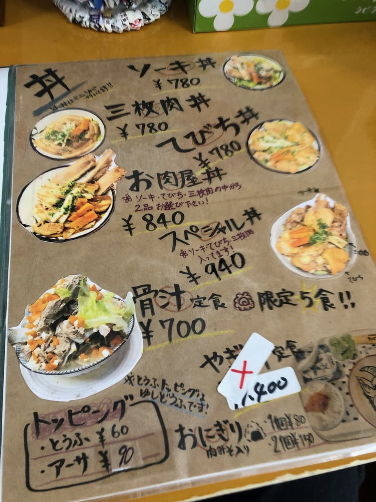
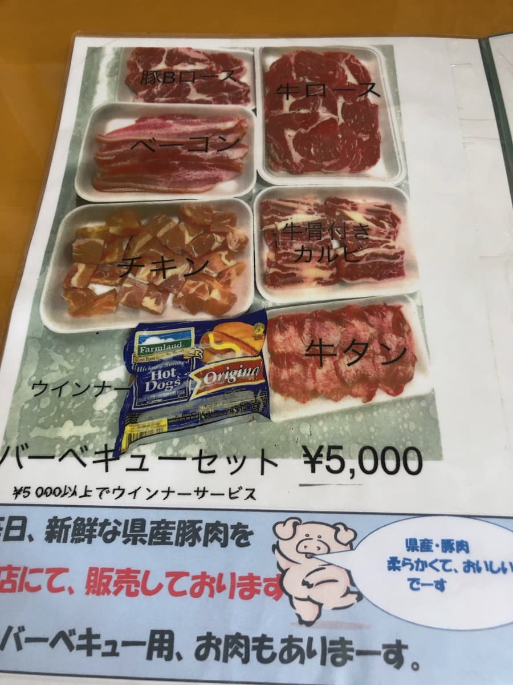
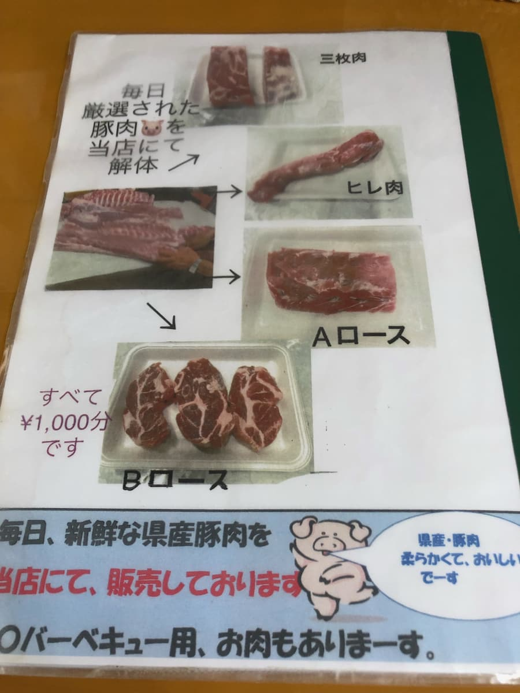
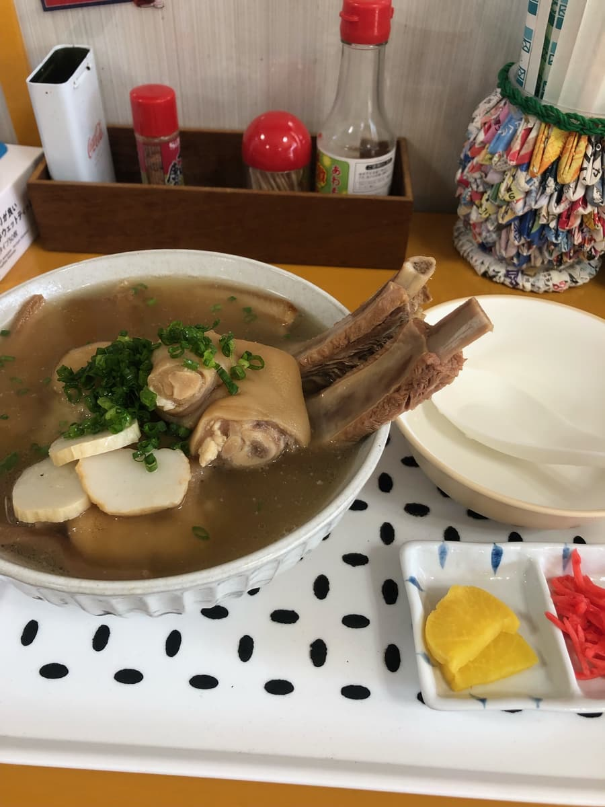
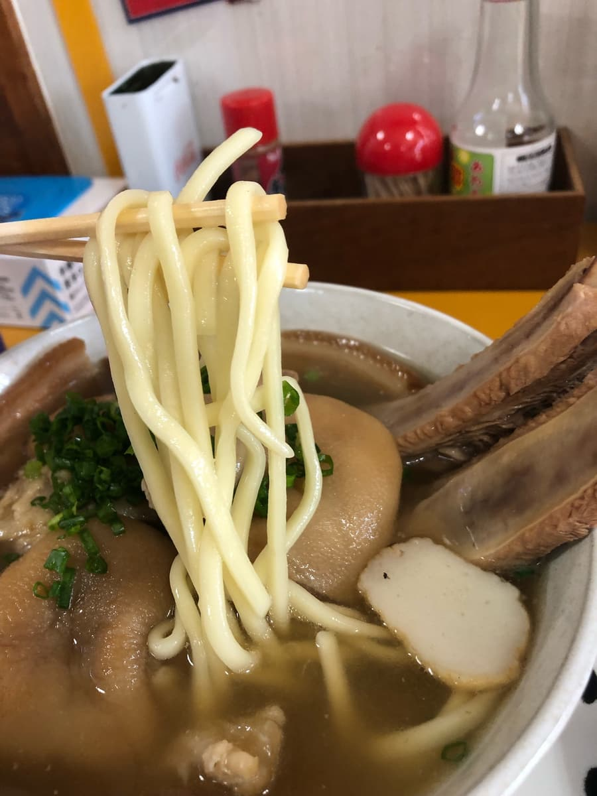
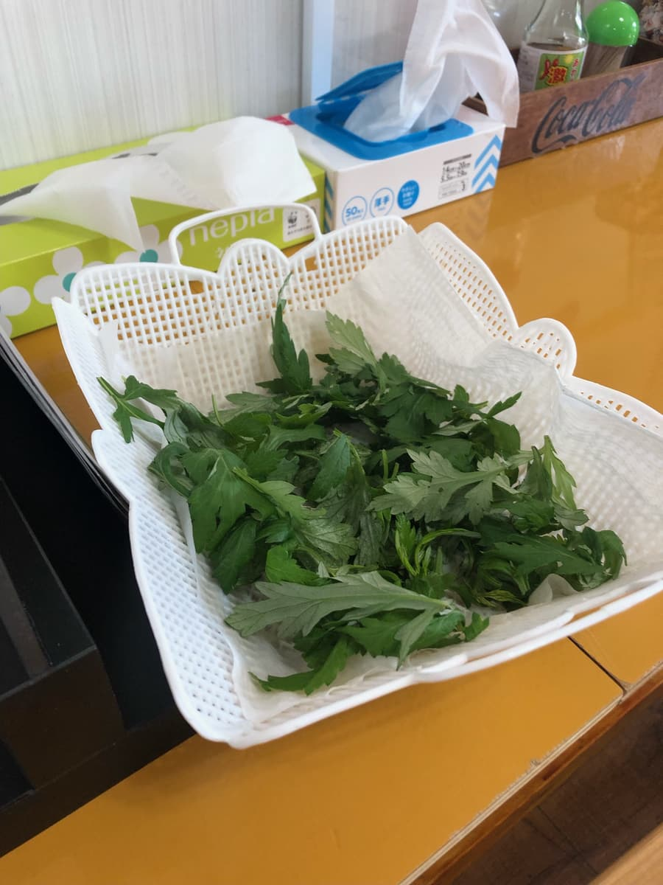

2023年12月吃的。這間店是「第13屆沖繩麵集章活動（2023.10.1～2024.2.29）」的參加店家，是我去的第25間／34間😊

這間店光看店名很難發現是沖繩麵店呢(^0^;)不過仔細一看，招牌上可愛的小豬正在宣傳沖繩麵（笑）
※停車場在後面，大概可以停4台。

馬上進到店裡檢查菜單。一開始就有麵的說明。寫著「本店使用照喜名麵的手打麵」。而且這個麵「超市買不到」，讓人有種好像很好吃的期待😄

這次決定點集章活動手冊上介紹的「特製麵（中）」。

因為是豬肉專賣店，丼飯也很齊全😁 骨頭湯的照片配料多得不得了呢(^0^;)

很有肉品專賣店的風格，也有在賣肉ｗｗ 不只豬肉，也有牛肉呢😆

據說精選的豬肉是在這間店分切的。肉也很令人期待呢😄

來了😁 配料很有衝擊感，不愧是豬肉專賣店，像豬肋排一樣的排骨，豬腳（豬蹄）好久沒吃了ｗｗ 還有切得偏薄的三層肉。
不過，首先照慣例從湯頭開始。「嗯？」覺得疑惑，用湯匙喝了好幾次湯。外表是很濃郁的顏色，但其實是淡淡的豬骨底高湯，調味相當清爽。
接著是三層肉。這個調味也意外地清爽，而且感覺還留有一點筋感。

接著吃「照喜名麵手打麵」。這個麵是中粗的直麵類型。偏軟呢。接著是配料的豬腳。這個膠原蛋白滿滿很軟嫩，但調味感覺偏淡。豬肋排風的排骨肉也很軟嫩，但味道感覺偏清淡。

我坐的桌子上沒有放，但隔壁有艾草。在後半段稍微跟麵一起吃了一點，淡淡的苦味成為一種點綴。真希望我的桌子上也有放。
評分（8分/15分）：哎呀～，聽到是豬肉專賣店的沖繩麵就忍不住期待了，但湯頭感覺味道很淡，肉雖然外觀很有衝擊感，但不禁覺得其他店的肉一般來說比較好吃吧～。
麵：★★★☆☆（3）
湯頭：★★✬☆☆（2.5）
配料：★★✬☆☆（2.5）